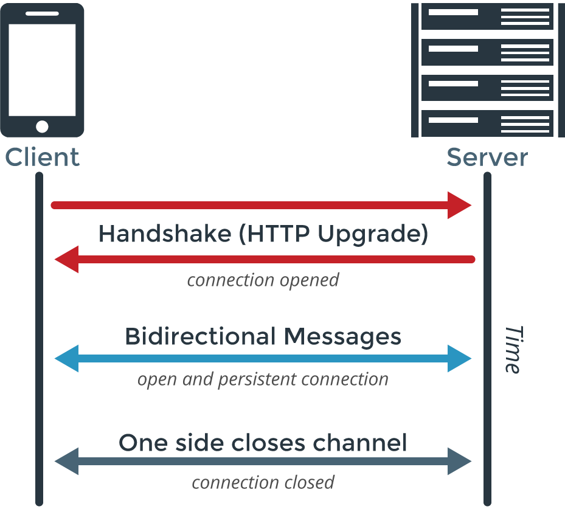
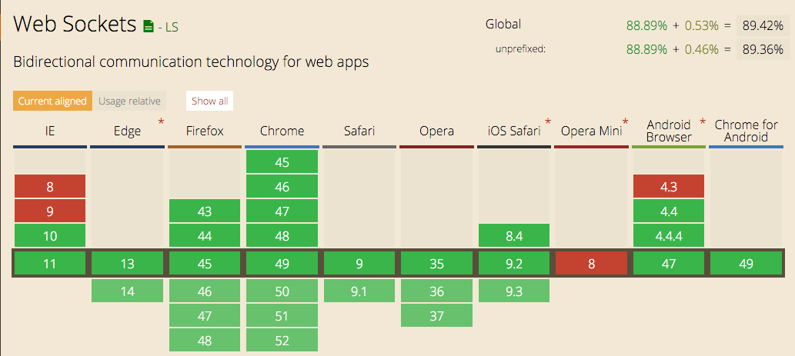

We want: Low latency, bi-directional, event driven messages. Historically called Comet
All these implementations were flawed since they failed to maintain a persistent connection with the server and receive asyncronous events directly from the server
WebSocket is a protocol providing full-duplex communication channels over a single TCP connection.
The raw implementation looks something like this:
let exampleSocket = new WebSocket("ws://www.example.com/socketserver", "protocolOne");
exampleSocket.onopen = function (event) {
exampleSocket.send("Here's some text that the server is urgently awaiting!");
};
exampleSocket.onmessage = function (event) {
console.log(event.data);
};
So what's the support for this thing?
Enables realtime, bi-directional communication between web clients and servers. It has two parts: a client-side library that runs in the browser, and a server-side library for node.js. Both components have a nearly identical API. Like node.js, it is event-driven.
Primarily uses the WebSocket protocol with polling as a fallback option, while providing the same interface. Although it can be used as simply a wrapper for WebSocket, it provides many more features, including broadcasting to multiple sockets, storing data associated with each client, and asynchronous I/O.
Live code
Implement a click counter that counts the clicks on a <button>, this must be syncronized on all connected clients.
Websockets are often difficult to scale, specially if you broadcast.
Pusher is websockets as a service, you connect your frontent to it, connect your backend and it takes care of the communication and the scale.
What if I tell you there's a tool out there that does all of what we implemented out of the box?
Meteor it's a platform that allows you to build isomorphic real-time apps in a breeze.
Check out the repo https://github.com/martip-sainsburys/nodejs-workshop.